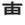

| KEI |
It's OK to respect my ass. |
|
The director wrote some verses about flowers that are pretty terrible, but you gotta respect it anyway, because he's the director. |
| 尊敬語 |
formal Japanese
★★★☆☆
F
the formal Japanese you use when you are addressing your superiors. |
| 尊敬 する |
respect
★★★☆☆
to look up to or respect someone. (BOOBOO: it's not ok to tell someone directly, 'I 尊敬 you very much!' - you'd say it about a third party) |
| Meaning | Hint | Radical | |
|---|---|---|---|
| 敷 | lay out / site | TNT |  |
| 敬 | respect | FLOWER | 花 |
Blow up the site with TNT, but I give you a FLOWER to show that I respect you.
|
respect
尊敬 拝む 崇拝 憧れ |
 KANJIDAMAGE
KANJIDAMAGE